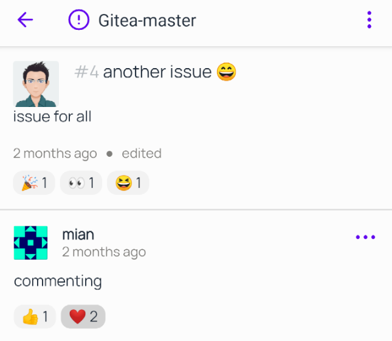
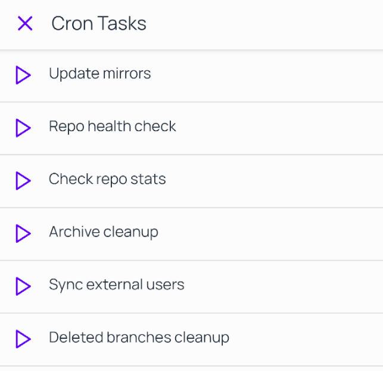
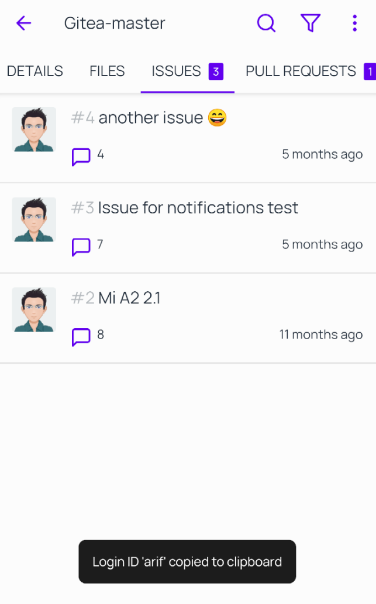

GitNex 3.5.0 is released with biometric auth, new file view renderer, cron tasks for admins
Mar 21, 2021 by @mmarif
GitNex team is proud to announce 3.5.0 release with biometric support, new file view renderer to load files fast wihtout any lag, progress notification for downloading files and many improvements including important fixes along the way.
1. Render emoji in issue/pr titles, commit message and markdown files
We have added support for emoji's in titles.
Render emoji in titles
2. Cron tasks (Admin only)
If you are an admin, it's easy to run cron tasks directly from GitNex now. Just tap on the play button.
Cron tasks
3. Biometric support to unlock the app
For added security that only you can use the app, we have added biometric authentication to GitNex. To enable it, go to settings -> Security.

Biometric authentication
4. Copy user login id to clipboard
Now when you tap on user avatars, it will copy his/her login id to clipboard.
Copy login id
5. Progress notification for downloading files
Download files will now trigger notification where you can see the progress.

Download progress notification
6. Switch to saved instance when coming from email/links
Now when you have another account active and coming from links/email let's say codeberg, it will switch the account automatically.
7. Rewrite file viewer in native code to move away from traditional js to load files faster
We have removed the highlightjs library and written our own native one to eliminate the lag and load the file way faster than it was before.
Improvements:
- File viewer
-- Support more file types, e.g: haxe, typescript. kotlin
-- Better handling of large files
- Allow multiline text in content inputs
- Improve app performance
- Improve files UI
- Improve navigation from keyboard for all input boxes
- Improve images loading
- Improve create/edit/delete file UI
Bug fixes:
- Fix crash for org labels in offline mode
- Fix offline mode memory regression
- Fix create file crash when no branch is selected
- Fix crash on commenting in some occasions
- Fix stargazer screen theme
- Fix crash on high res images in file viewer
- Fix encoded url render in files breadcrumb
- Fix encoding in user names